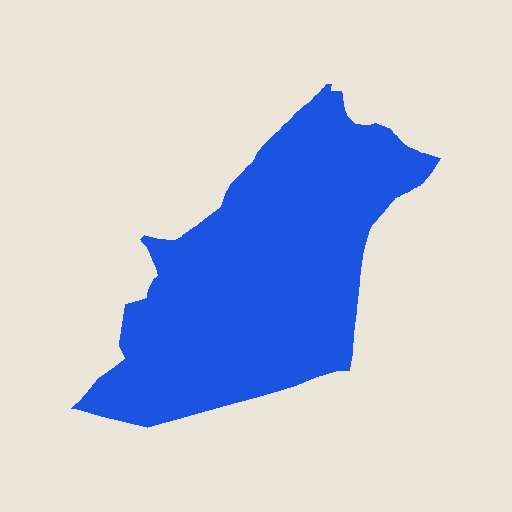

MAPEA
Herramientas de inversión inmobiliaria con cabeza de urbanista.
Prototipo de investigación
Perú · Lima
Barranco
3.534 lotes · zonificación, altura permitida, accesibilidad y un modelo de valor simulado.

España · Madrid
Carabanchel
9.979 lotes · norma zonal, altura permitida y edificación real, todo con dato oficial del Catastro.
Trabajo en desarrollo, publicado con fines de investigación y demostración. No es una fuente catastral oficial ni un servicio de tasación.
← sebastianortizdezevallos.com